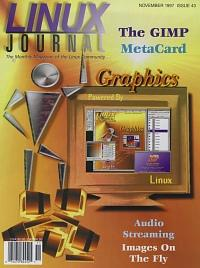

Shutdown Archive web server
Search:
Linux Journal
Issue #43/November 1997

Features
Graphical Applications Using MetaCard
by Scott Raney
How to write graphical applications using MetaTalk, a MetaCard scripting language.
Streaming Audio in Linux
by Siome Goldenstein
The nature and perception of sound, sound as an object in a computer and available software for streaming audio.
The Quick Start Guide to the GIMP, Part 1
by Michael J. Hammel
First of a four-part series introducing the GIMP, a Linux power tool for the graphics artist.
GIF Images On The Fly
by Jimmy Ball
New images from old, in real time.
News & Articles
Linux Expo at Union Bank of Switzerland
by Martin Sjoelin
Sound through the PC-speaker
by Paul Dunne
YODL or Yet Oneother Document Language
by Karel Kubat
Linux Journal
Interviews Robert Nation
by Larry Ayers
Linux as a Telephony Platform
by David Sugar
Game Control Design
by Dave Thomson
Linux and the Alpha, How to Make Your Applications Fly, Part 2
by David Mosberger
Mistaken Identities
Reviews
Product Review
Metro-X 3.1.5
by Mark Nassal
Product Review
SCO OpenServer
by Ken Collins
Product Review
Lifebook 420D Notebook Computer
by Michael Scott Shappe
Product Review
AcceleratedX CDE and Display Server for PC Unix
by Bradley Willson
Book Review
Operating Systems: Design and Implementation, 2nd edition
by Boytcho Peytchev
Book Review
Perl5
by Michael Hines
Book Review
Essential Linux
by Marjorie Richardson
Book Review
Linux Universe
by Jan Rooijackers
WWWsmith
Faxing From a Web Page
by David Weis
Book Review
The UNIX Web Server Book
by Gerald Luther Graef
At the Forge
Integrating SQL with CGI, Part 2
by Reuven Lerner
Columns
Letters to the Editor
From the Publisher
Linux in the Mainstream?
by Phil Hughes
Stop the Presses
Ownership of Linux Trademark Resolved
by Margie Richardson
Linux Apprentice
Power Printing with MagicFilter
by Bill Cunningham
Take Command
ssh: Secure Shell
by Alessandro Rubini
Linux Means Business
Highway POS System
by Marc L Allen
New Products
System Administration
IP Masquerading Code Follow-Up
by Chris Kostick
Kernel Korner
Linux Kernel Installation
by David A. Bandel
Linux Gazette
Using SAMBA to Mount Windows 95
by Jonathon Stroud
Best of Technical Support
Archive Index
Shutdown Archive web server
Search:
Copyright © 1994 - 2018
Linux Journal
. All rights reserved.